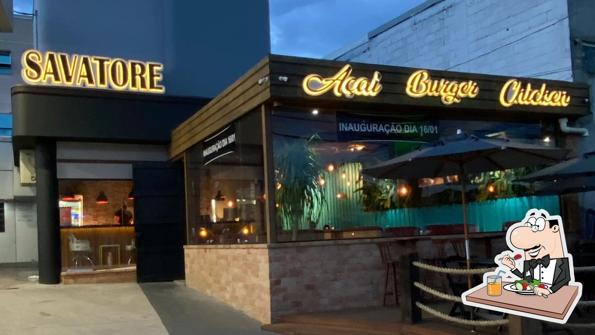
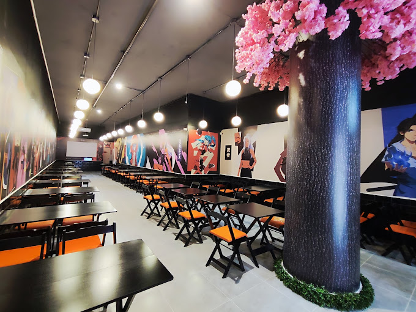

Um lugar impressionante e com uma estrutura reaproveitada, que da uma sensação de casa, um bom lugar e extremamente confortável.
Uma cafeteria com tematica de animes localizada na liberdade, um lugar muito legal para mim que sou um baita fã da animação japonesa.
Um lugar cheio de arte e cheio de histórias, também um local cheio da arte da animação japonesa,
um local onde se tem diversos itens de anime a venda.